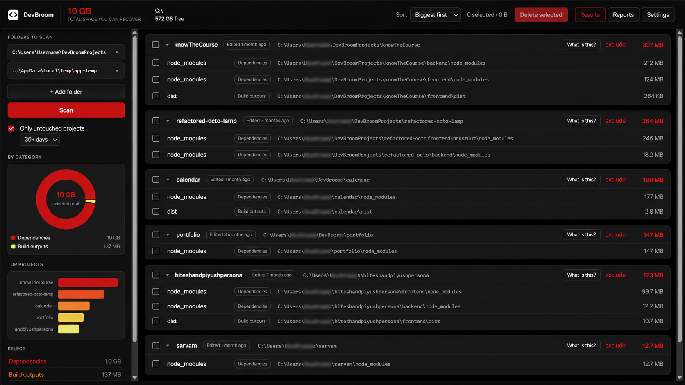
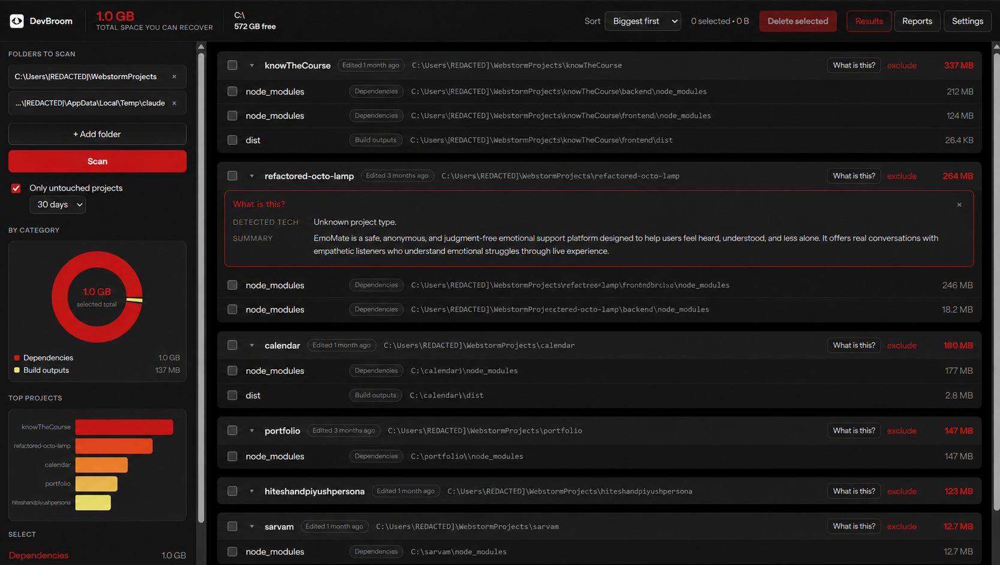
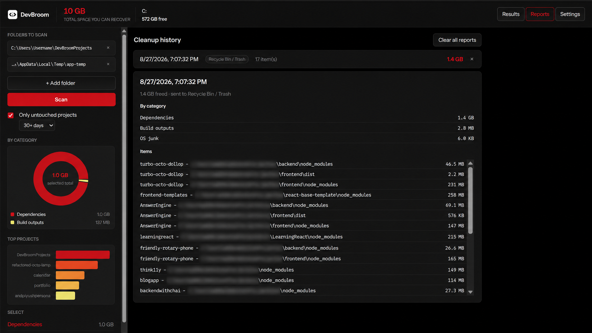
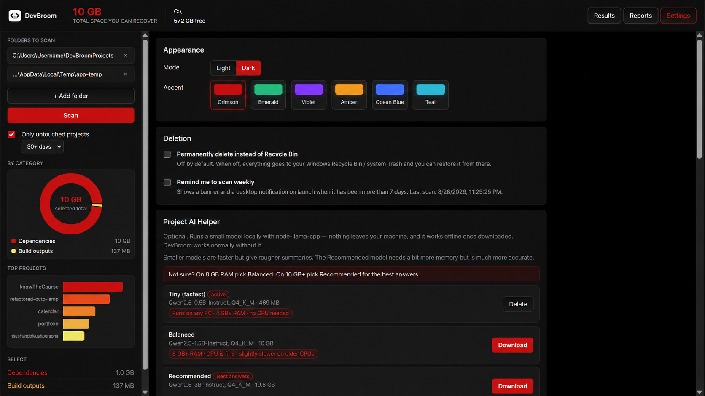

Every project you own is hoarding gigabytes of node_modules, build output and
caches you will never read again. DevBroom finds all of it, shows you exactly what it costs,
and sweeps only what you tick — to the Recycle Bin, never into the void.
No account, no telemetry, no network calls. Runs entirely on your machine.

Point it at the folder your projects live in. One scan powers everything below.
Anything with a package.json or .git is a project. Results are
grouped under it with per-project and per-category totals, and each match is measured once
— never double-counted.
Redundant Files lists just the regenerable junk. Projects lists every project with its full size and last-edited date, for the ones you are done with entirely.
Everything goes to the Recycle Bin. Drive roots, home and system folders are hard-blocked, symlinks are never followed, and you can star a project to protect it from deletion for good.
Forgotten what a folder even was? Download a small Qwen2.5 model and get a plain-English summary of any project — running fully on your machine, with no internet after the download.
A donut by category, your biggest projects at a glance, a live disk meter, and a full history of every cleanup with what it removed and how much it freed.
Light and dark, six accent colours, and Instrument Sans bundled locally. It looks like a developer tool because it is one.
No configuration required — the defaults are the safe ones.
Point DevBroom at wherever your repos live. It remembers it between launches.
Watch the count and recoverable total climb live. Results are cached, so reopening the app is instant.
Select per item, project or category, confirm, and watch it go — with a progress bar, a Stop button, and a report at the end.
Real screens, nothing mocked up.



Free, MIT licensed, and small enough to read end to end.
The Windows installer is unsigned, so SmartScreen shows “unknown publisher” — click More info → Run anyway. That is normal for free unsigned apps.